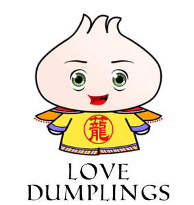

Trade Mark Journal No.2025/029 18 July 2025
UK00004077746 19 July 2024 (29,30,32,33,35,39,41,43)

- Class 29
- Meat; poultry; chicken; lamb products; sliced meat; sliced and seasoned meat; sliced lamb; sliced beef; sliced meat for hot pot; pork; raw seafood for hot pot; sashimi; prepared dishes consisting primarily of fishcakes, vegetables, boiled eggs, and broth; fish, seafood and molluscs; clams; shrimp; snails; crab; frozen shellfish; octopuses; prepared entrees consisting of seafood; oysters; mousses; mussels; salmon; sardines; salted fish; shrimps; squid; trout; tuna; sushi related dishes and ingredients, namely raw, cooked, frozen, dried or preserved fish, seafood, seafood products, fish roe, poultry, meat, meat products, beef, pork and edible seaweed for use in dishes containing or consisting of sushi; raw and cooked fish and fish products for food; seaweed extracts for food; fish and food products made from fish; meat and food products made from meat; crustaceans; shellfish; mollusca; caviar; soups; soups and stocks; extracts of seafood or dried seafood; meat extracts; soup mixes; noodle soup; miso soups; soup preparations; preserved, dried, and cooked fruits and vegetables; dates; jellies, jams, compotes; eggs and food products made from eggs; milk and milk products; yoghurt; cheese, including Indian (ethnic) cheeses known as paneer, mava and khoa; edible oils and fats; roasted peanuts; peanut butter; peanuts, nuts, kernels, legumes, drupes, pods, all being prepared or processed; edible nuts and seeds, including those prepared as snack foods; mixtures of fruit and nuts; salted meats; salted nuts; chocolate nut butter; crystallised, frosted and frozen fruit; cooked, baked, dried, preserved, processed and stuffed potatoes; snack foods; snack food products; pickles; indian (ethnic) savouries and snacks; beverages based predominantly on dairy products or yoghurt; flavoured milk drinks; cooked meals in this class; ready-prepared meals; ready-prepared desserts; snack foods containing vegetables; edible seaweed and food products made from seaweed; spread made from nuts, kernels, legumes, drupes, pods or peanuts; beverages containing soya, bird eggs and egg products; milk; cheese; butter; coconut milk; oils and fats; sesame oil; chilli oil; processed fruit; fungi and vegetables; nuts; fruit desserts; spinach; olives; peanuts; tomatoes; beansprouts; beetroots; collard greens; eggplant; peppers; chilli pepper; scallions.
- Class 30
- Sushi; coffee; tea; cocoa and artificial coffee; rice; tapioca and sago; spices; vinegar; sauces; chilli sauce; chilli seasonings; curried food pastes; curry powder; dumplings; Chinese steamed dumplings; Chinese rice noodles (bifun, uncooked); black bean sauce; hot sauce; horseradish sauce; soy sauce; teriyaki sauce; sweet and sour sauce; spicy sauces; wasabi sauce; bakery goods; dried coriander for use as seasoning; noodles; rice noodles; noodles with soup; vermicelli; wontons; Chinese dim sum; pies; meat pies; Chinese tea; ginseng tea; green tea; herbal tea; instant noodles; Japanese green tea; sushi related dishes and ingredients, namely, cooked rice, pieces of sushi, sushi rolls, onigiri, hand rolls [sushi], kimbap, maki, nigiri, temaki, uramaki, inari and gunkan; udon; Japanese food, namely, cooked rice, sushi, sushi rolls, onigiri, hand rolls [sushi], kimbap, maki, nigiri, temaki, uramaki, inari, gunkan, Japanese desserts and Japanese pastries; Okon omiyaki [Japanese savoury pancakes]; ramen [Japanese noodle-based dish]; bread, pastries and confectionery; dough; doughnuts; novelty doughnuts; doughnut mixes; instant doughnut mixes; flour for doughnuts; doughnut cones; doughnut ice creams; mixes for making bakery products; preparations for making bakery products; flour; sweet glazes and fillings; chocolate based fillings; custard based fillings; sweets; candy; cookies; biscuits; cakes; muffins; bagels; chocolate; puddings; ice cream, sorbets and other edible ices; ice cream sandwiches; ice cream cones; frostings; frosting mixes; icings; topping syrups; chocolate toppings; sugar, honey, treacle; yeast; baking powder; salt; seasonings; preserved herbs; sauces and other condiments; coffee, tea, cocoa and artificial coffee; rice, pasta and noodles; flour and preparations made from cereals; ginger [spice]; preserved ginger; ginger puree; pickled ginger; white and black sesame seeds; rice vinegar, sushi vinegar, rice vinegar; horseradish; wasabi; sesame snacks; rice based snacks; rice cracker mix; salad dressings, teriyaki sauce, ponzu sauce, barbecue sauce, noodle sauce, wasabi sauce, rice seasonings; rice and wheat noodles; panko breadcrumbs; rice flour.
- Class 32
- Beer and brewery products; non-alcoholic beverages; mineral and aerated waters; fruit beverages and fruit juices; syrups and other non-alcoholic preparations for making beverages; preparations for making beverages; flavoured juices; bottles water; nut and soy based beverages; vegetable drinks.
- Class 33
- Alcoholic beverages; alcoholic cordials; alcoholic extracts; alcoholic bitters; gin; alcoholic gin; alcoholic extracts for gin; low-alcoholic extracts for gin; prepared gin cocktails; cocktails; vodka; vodka mixtures; mixed alcoholic drinks containing vodka; alcoholic beverages containing vodka; alcoholic cordials containing vodka; alcoholic extracts containing vodka; alcoholic bitters containing vodka; cider; grappa; port; kirsch; arrack; brandy; calvados; cachaça; alcopops; arak; aperitifs; anisette; wine; red wine; white wine; rum; sake; sangria; malt whisky; sherry; schnapps; vermouth; prepared wine cocktails; alcoholic cocktails in the form of chilled gelatines; raspberry cocktails; grapefruit cocktails; preparations for making alcoholic beverages; alcoholic energy drinks; alcoholic energy drinks containing vodka; alcoholic beverages containing fruit.
- Class 35
- Advertising; business management relating to restaurant franchising; marketing services in the field of restaurants; advisory services relating to the running of restaurants; product demonstrations and product display services; trade show and exhibition services; loyalty, incentive and bonus program services; provision of advertising space, time and media; distribution of advertising, marketing and promotional material; advertising, marketing and promotional consultancy, advisory and assistance services; commercial trading and consumer information services; retail services relating to the sale of clothing, footwear, headgear, children’s clothing, children’s outerclothing, clothing for babies, romper suits, sleepsuits, casual clothing, woollen clothing, waterproof clothing, bathing caps, costumes for use in children’s dress up play, swimwear for children, overalls for infants and toddlers, pyjamas, swimwear, hooded tops, plush clothing, pullovers, undergarments, underwear, clothing made of fur, denim clothing, denim jeans, shorts and briefs, sports shirts with short sleeves, t-shirts, printed t-shirts, polo shirts, camisoles, jackets, denim jackets, fur jackets, fur coats, trousers, tights, legwarmers, handwarmers, gloves and mittens, scarves, hosiery, children's headwear, fashion hats, headbands, hats, bandannas, beanies, caps, woolly hats, ear muffs, fur muffs, nightcaps, knitted caps, leisure footwear, slip-on shoes, children's footwear, boots, ankle boots, football boots, boots for sports, footwear for track and field athletics, footwear for use in sport, dance slippers, heeled shoes, infants' boots, lace boots, shoes for infants, bootees, sneakers, sports shoes, athletic shoes, toys, games and playthings, toys for babies and infants, board games, soft-toys, plush toys, baby playthings, electronic learning toys, hand-held electronic games, floats for bathing and swimming, children’s playthings, play structures for children, children’s playground apparatus, infants swing sets, tricycles for children for use as playthings, indoor play apparatus for children, children’s punch balls, climbing slides being play apparatus for children, action figure toys, accessories for dolls, arcade games, arcade game machines, baby playthings, bath toys, balloons, building games, cots for dolls, cuddly toys, developmental toys, dolls' houses, doll accessories, electronic toys, inflatable toys, toy pushchairs, jokes (play things), jigsaw puzzles, masks [playthings], memory games, model cars, outdoor toys, party games, play mats containing infant toys, play structures for children, play money, playground balls, puppets, quiz games, sandboxes [playthings], scooters [toys], swing sets, talking toys, target games, swimming floats, toy construction sets, toys adapted for educational purposes, toys being for sale in kit form, trampolines, video game apparatus, video game machines, water guns, water toys, wheeled toys, sporting equipment, meat, poultry, chicken, lamb products, sliced meat, sliced and seasoned meat, sliced lamb, sliced beef, sliced meat for hot pot, pork, raw seafood for hot pot, sashimi, prepared dishes consisting primarily of fishcakes, vegetables, boiled eggs, and broth, fish, seafood and molluscs, clams, shrimp, snails, crab, frozen shellfish, octopuses, prepared entrees consisting of seafood, oysters, mousses, mussels, salmon, sardines, salted fish, shrimps, squid, trout, tuna, sushi related products - namely anchovy fillets, beef, chicken, chop suey, chowder, cods, fish, fish balls, fish crackers, fish eggs for human consumption, fish fillets, fish fingers, fish spawn (processed -), fish sticks, fish stock, tinned fish, French fries, hamburgers, herrings, hotdog sausages, not live lobsters, not live octopuses, onion rings, not live oysters, prepared fruits, roast beef, salmon, salted fish, sardines, not live sea basses, red snappers non-live sea breams, sea food, seaweed extracts for food, non-live shellfish, smoked fish, smoked salmon, soya milk, spiny lobsters, steaks of fish, sturgeon eggs, tuna fish, vegetable burgers, raw and cooked fish and fish products for food, seaweed extracts for food, fish and food products made from fish, meat and food products made from meat, crustaceans, shellfish, mollusca, caviar, soups, soups and stocks, meat extracts, soup mixes, noodle soup, miso soups, soup preparations, preserved, dried, and cooked fruits and vegetables, dates, jellies, jams, compotes, eggs and food products made from eggs, milk and milk products, yoghurt, cheese, including Indian (ethnic) cheeses known as paneer, mava and khoa, edible oils and fats, roasted peanuts, peanut butter, peanuts, nuts, kernels, legumes, drupes, pods, all being prepared or processed, edible nuts and seeds, including those prepared as snack foods, mixtures of fruit and nuts, salted meats, salted nuts, chocolate nut butter, crystallised, frosted and frozen fruit, cooked, baked, dried, preserved, processed and stuffed potatoes, snack foods, snack food products, pickles, indian (ethnic) savouries and snacks, beverages based predominantly on dairy products or yoghurt, flavoured milk drinks, cooked meals in this class, ready-prepared meals, ready-prepared desserts, snack foods containing vegetables, edible seaweed and food products made from seaweed, spread made from nuts, kernels, legumes, drupes, pods or peanuts, beverages containing soya.bird eggs ang egg products, milk, cheese, butter, coconut milk, oils and fats, sesame oil, chilli oil, processed fruit, fungi and vegetables, nuts, fruit desserts, spinach, olives, peanuts, tomatoes, beansprouts, beetroots, collard greens, eggplant, peppers, scallions, sushi, coffee, tea, cocoa and artificial coffee, rice, tapioca and sago, spices, vinegar, sauces, chilli sauce, chilli pepper, chilli seasonings, curried food pastes, curry powder, dumplings, Chinese steamed dumplings, Chinese rice noodles (bifun, uncooked), extracts of seafood or dried seafood, black bean sauce, hot sauce, horseradish sauce, soy sauce, teriyaki sauce, sweet and sour sauce, spicy sauces, wasabi sauce, bakery goods, dried coriander for use as seasoning, noodles, rice noodles, noodles with soup, vermicelli, wontons, Chinese dim sum, pies, meat pies, Chinese tea, ginseng tea, green tea, herbal tea, instant noodles, Japanese green tea, sushi related products -namely sushi, Japanese food, nigiri, sashimi, California rolls, miso soup, ramen, udon soup, gyoza, rice, yakisoba, maki, edamame, kaisu, kimchi chicken, seaweed, katsu, teriyaki, bento boxes, ikura, Japanese hand rolls, iso, dorayaki, mochi, green tea, soy sauce, chilli crackers, uncooked Chinese noodles, uncooked Chinese rice noodles, chow mein, chow mein noodles, dumplings, fish dumplings, fructose syrup for use in the manufacture of foods, ginger, ginseng tea, hamburger sandwiches, hamburgers being cooked and contained in a bread rolls and bread buns, Korean soy sauce, Korean traditional rice cake, Korean traditional sweets and cookies, mustard vinegar, noodle-based prepared meals, noodles, pickled ginger, rice, rice based dishes, rice dumplings dressed with sweet bean jam, rice mixed with vegetables and beef, sesame seeds, shrimp dumplings, shrimp noodles, spring rolls, teas, teriyaki sauce, udon, udon noodles, Udon, Okonomiyaki [Japanese savoury pancakes], ramen [Japanese noodle-based dish], bread, pastries and confectionery, dough, doughnuts, novelty doughnuts, doughnut mixes, instant doughnut mixes, flour for doughnuts, doughnut cones, doughnut ice creams, mixes for making bakery products, preparations for making bakery products, flour, sweet glazes and fillings, chocolate based fillings, custard based fillings, sweets, candy, cookies, biscuits, cakes, muffins, bagels, chocolate, puddings, ice cream, sorbets and other edible ices, ice cream sandwiches, ice cream cones, frostings, frosting mixes, icings, topping syrups, chocolate toppings, sugar, honey, treacle, yeast, baking powder, salt, seasonings, preserved herbs, sauces and other condiments, coffee, tea, cocoa and artificial coffee, rice, pasta and noodles, flour and preparations made from cereals, ginger [spice], preserved ginger, ginger puree, pickled ginger, white and black sesame seeds, rice vinegar, sushi vinegar, rice vinegar, horseradish, wasabi, sesame snacks, rice based snacks, rice cracker mix, salad dressings, teriyaki sauce, ponzu sauce, barbecue sauce, noodle sauce, wasabi sauce, rice seasonings, rice and wheat noodles, panko breadcrumbs, rice flour, beer and brewery products, non-alcoholic beverages, mineral and aerated waters, fruit beverages and fruit juices, syrups and other non-alcoholic preparations for making beverages, preparations for making beverages, flavoured juices, bottles water, nut and soy based beverages, vegetable drinks, alcoholic beverages, alcoholic cordials, alcoholic extracts, alcoholic bitters, gin, alcoholic gin, alcoholic extracts for gin, low-alcoholic extracts for gin, prepared gin cocktails, cocktails, vodka, vodka mixtures, mixed alcoholic drinks containing vodka, alcoholic beverages containing vodka, alcoholic cordials containing vodka, alcoholic extracts containing vodka, alcoholic bitters containing vodka, cider, grappa, port, kirsch, arrack, brandy, calvados, cachaça, alcopops, arak, aperitifs, anisette, wine, red wine, white wine, rum, sake, sangria, malt whisky, sherry, schnapps, vermouth, prepared wine cocktails, alcoholic cocktails in the form of chilled gelatines, raspberry cocktails, grapefruit cocktails, preparations for making alcoholic beverages, alcoholic energy drinks, alcoholic energy drinks containing vodka and alcoholic beverages containing fruit.
- Class 39
- Transport; packaging and storage of goods; travel arrangement; food delivery services; drink delivery services; food and drink delivery services; information regarding delivery services and bookings for delivery services provided via a website; parcel delivery; transport and delivery of goods; message delivery; express delivery of goods by vehicles; pick up, delivery and storage of personal property; providing information concerning collection and delivery of assets in transit; delivery services; temporary storage of deliveries; transportation and delivery services by road.
- Class 41
- Education; providing of training; entertainment; sporting and cultural activities; catering training; provision of training in the field of hygiene for the catering industry; customised lessons in relation to the culinary arts; restaurant lessons; group cooking classes; private tuition; training of personnel in food technology; education services relating to food technology; training in the handling of food; training in the display of food; education services relating to the training of personnel in food technology; cooking instruction; education services relating to cooking; correspondence courses relating to cookery; cooking courses; running cookery courses; informal cooking lessons; cooking instruction; hospitality management courses; hospitality training; training in the culinary arts; courses in pastry and confectionary; patisserie instructions; providing of coaching; providing of instruction; entertainment; education and training relating to Japanese, Asian and Fusion cooking; providing courses of instruction at the post-secondary school level.
- Class 43
- Services for providing food and drink; restaurants; provision of food and drink in restaurants; catering for the provision of food and drink; hotels; pubs; bars; lounges; café; sushi bars; tapas bars; wine bars; wine bar services; wine tasting services (provision of beverages); cocktail bars; catering for the provision of food and beverages; preparation of food and drink; services for the preparation of food and drink; provision of information relating to the preparation of food and drink; temporary accommodation; restaurant services; restaurant information services; restaurant reservation services; carvery restaurant services; mobile restaurant services; fast food restaurant services; self-service restaurant services; restaurant services incorporating licensed bar facilities; restaurant services for the provision of fast food; takeaway services; take-out restaurant services; Japanese restaurants; Chinese restaurants; sushi restaurants; restaurant services serving Szechuan cuisine; food and drink catering in relation to Szechuan cuisine; restaurant services serving Chinese cuisine; restaurant services serving Japanese cuisine; cafes; eateries; tea house; canteens; food preparation; provision of food and drink; hospitality services; provision of food in drink in restaurants; temporary accommodation services; booking of restaurant seats; consultancy services relating to food; preparation of Japanese food for immediate consumption; Japanese restaurant services; consulting services in the field of culinary arts; catering; catering services; catering of food and drink; rental of catering equipment; hotel catering services; mobile catering services; catering services for cocktail parties, fair and exhibition facilities, business functions, entertainment events; self-service restaurants; restaurant services provided by hotels; reservation and booking services for restaurants and meals; providing food and drink for guests in restaurants; serving food and drink for guests in restaurants; grill restaurants; take-away fast food services; food and drink catering for institutions; tourist restaurants; cafés; self-service cafeteria services; café services; serving food and drink in internet cafes; providing food and drink in internet cafes; bar services; salad bars; snack-bars; providing food and drink in doughnut shops; serving food and drink in doughnut shops; coffee shops; coffee shop services; salad bars [restaurant services]; reservation of tourist accommodation; advice concerning cooking recipes; rental of cooking equipment for industrial purposes; rental of cooking apparatus; rental of cooking utensils; rental of food service equipment; rental of kitchen sinks; cookery advice.
LEONG ENTERPRISES LTD
Representative: Trade Mark Wizards Limited